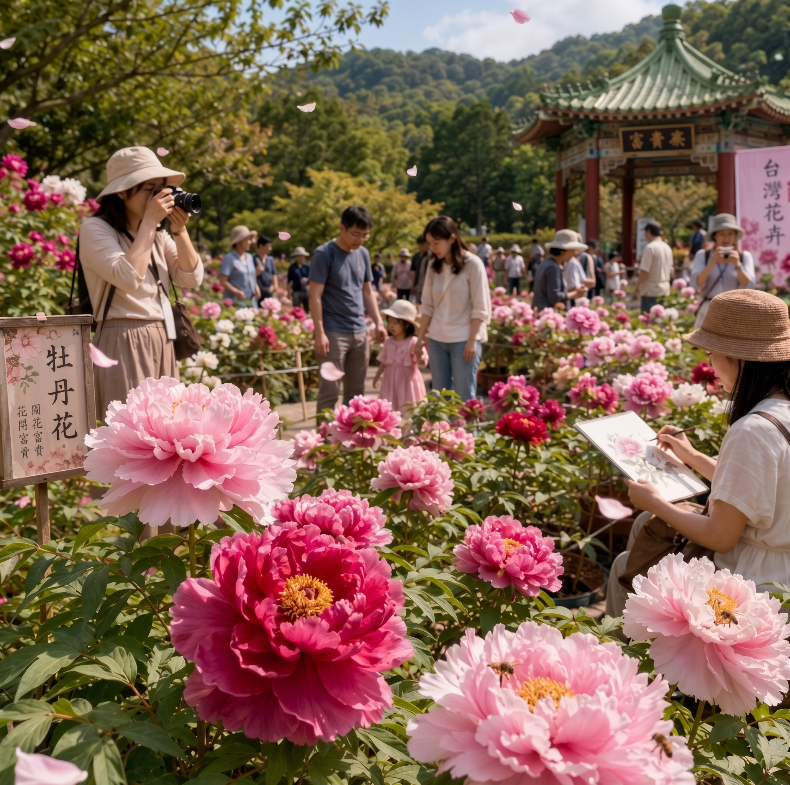

春天到來的時候，總會讓人想走到戶外看看花。無論是在公園裡漫步，還是在花市中駐足欣賞，當一大片牡丹映入眼簾時，總會讓人不自覺地放慢腳步。那層層疊疊的花瓣、飽滿圓潤的花形，以及豐富而柔和的色彩，總能讓人感受到一種不同於其他花卉的氣質。牡丹外表不只是美麗，更有一種讓人願意靜下心來細細欣賞的魅力。
第一次認真欣賞牡丹，是在建國花市。原本只是隨意走走散步，沒想到走進花市後，立刻被眼前盛開的牡丹吸引。大片花叢中，有鮮紅如霞的、有淡粉似雲的，也有潔白如雪的。陽光灑落在花瓣上，彷彿在每一朵花鍍上了一層柔和的光芒。站在花前，不禁令人感嘆大自然的神奇，竟能孕育出如此華麗的作品。
相較於一些小巧玲瓏的花朵，牡丹顯得格外大方。它從不刻意討好誰，也不需要依靠濃烈的香氣來吸引注意。光是那飽滿的花型與優雅的姿態，就足以成為眾人目光的焦點。但有趣的是，牡丹雖然華貴，卻不讓人覺得遙不可及。看著它在風中輕輕搖曳，反而有一種溫暖親切的感覺，像極了一位氣質優雅的老朋友，靜靜地陪伴著欣賞它的人。
在日常生活中，我們總是忙著工作、照顧家庭、處理各種大大小小的事情，常常從早忙到晚，卻忘了停下腳步欣賞身邊的風景。有時候一整天過去，腦中裝滿的是工作進度、生活開支與未完成的待辦事項。直到走近盛開的牡丹，才突然發現春天已經悄悄來到了身邊。
牡丹帶給人的感受，不只是視覺上的享受，更像是一種提醒。它提醒人們，生活除了忙碌之外，也需要保留一些欣賞美景的時間。就像一杯咖啡、一場春雨、一段與家人談笑的晚餐時光，看似平凡，卻能讓心情沉澱下來。而欣賞牡丹也是如此，在那短暫的停留之中，彷彿把生活中的煩躁都暫時放下了。
許多人喜歡牡丹，是因為它象徵富貴吉祥。在傳統文化裡，牡丹一直被視為幸福、美滿與繁榮的代表，因此常出現在繪畫、瓷器與文學作品之中。然而，當真正站在牡丹面前時，人們感受到的往往不只是富貴的象徵，而是一種生命綻放的力量。
牡丹並不是一年四季都盛開。大部分時間裡，它安靜地生長，默默累積養分。直到春天來臨，才把最美的一面展現出來。這讓人想到生活中的許多事情也是如此。很多成果並非一蹴而就，而是在日復一日的努力中慢慢累積。學生為了理想的學校而認真讀書，上班族為了工作目標而不斷學習，父母為了家庭默默付出，這些看似平凡的堅持，何嘗不是另一種等待綻放的過程？
每當看到牡丹盛開，就會明白美麗從來不是偶然的。花朵之所以能夠如此燦爛，是經過了季節的交替與時間的醞釀。同樣地，人生中的許多收穫，也來自於長久的努力與耐心。
 |